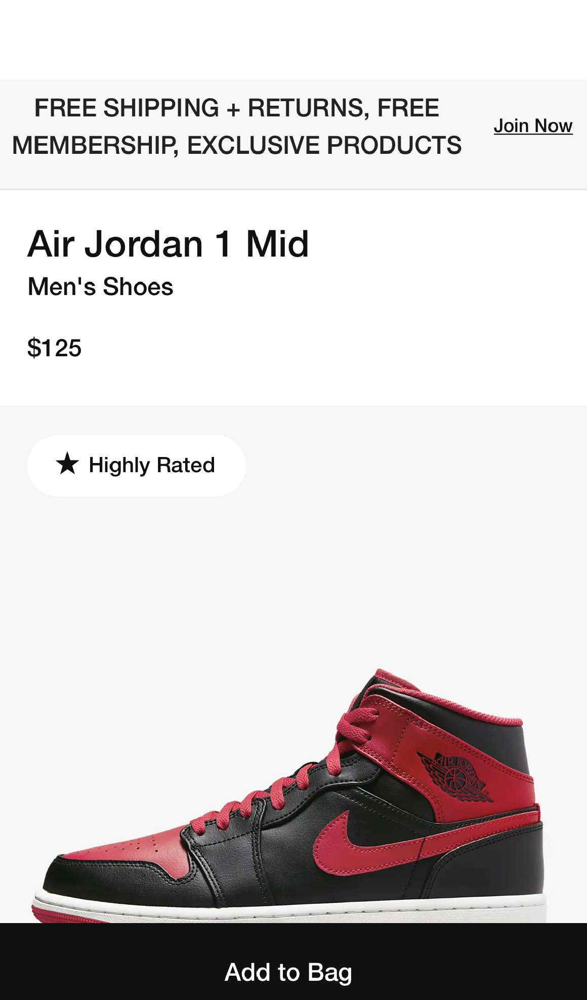

Hick's Law
Here is an example of Hicks Law. The previous version of Google had a lot of features to click on. Hicks Law is to minimize the amount of choices a consumer has to make. Google has done this by simplifying the choices to the top bar and the search bar.
White Space and Clean Design
Pittsburg Zoo
https://www.pittsburghzoo.org/
Here is an example of Hicks Law. The previous version of Google had a lot of features to click on. Hicks Law is to minimize the amount of choices a consumer has to make. Google has done this by simplifying the choices to the top bar and the search bar.
Fitts's Law
Nike
https://www.nike.com/t/air-jordan-1-mid-mens-shoes-b3js2D/DQ8426-060
